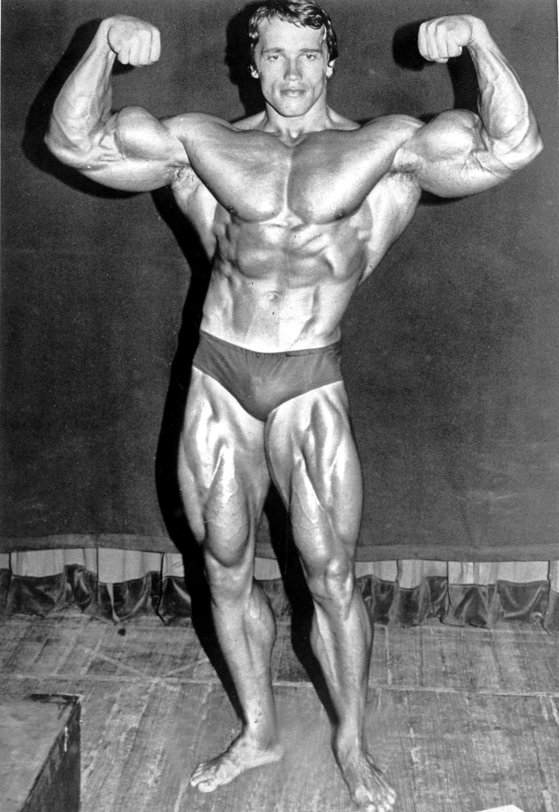

A testépítés
Szó jelentése

A testépítés szó említésekor mindenkinek más jut eszébe: Van, akinek a 130 kilós, fecske úszógatyában pózoló profik. Másoknak hölgyek, akiken nagyobb izomtömeg van, mint az összes férfi családtagján összesen. Akad olyan is, aki egyből Arnold Schwarzeneggert látja maga előtt.
Testépítésről
Főleg a nők körében elterjedt ez a nézet. Rengetegszer hallani, hogy ezt a kifogást hozzák fel, mikor arról beszélnek, hogy meg akarnak szabadulni például az integető hájtól. A testépítés azonban nem így működik. Nagyon nem.
Mégtöbb testépítés
Ahhoz, hogy valaki izomtömeget szedjen fel, nagyon fegyelmezett, már-már szigorú táplálkozásra van szüksége. Amennyiben ez nincs meg, biztosan nem fog fenyegetni az a veszély, hogy “túl naggyá válsz”.